A collection of carved panels, mandalas, signs, and sculptural wall pieces.
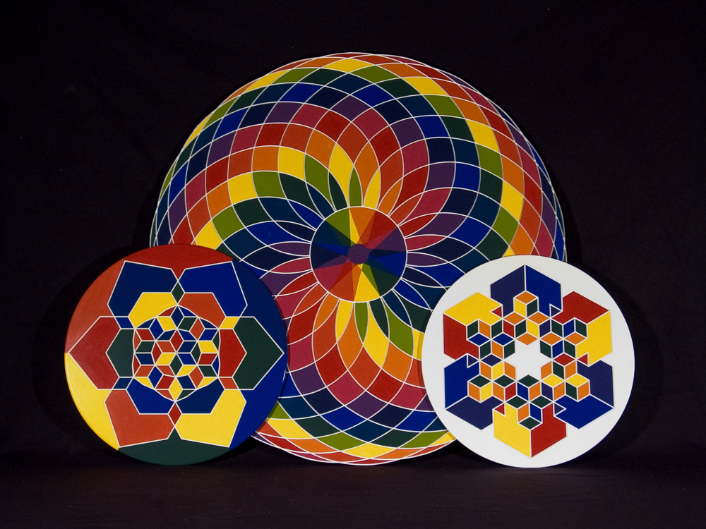
Hand painted carved wall designs expressing my love of geometric perfection.
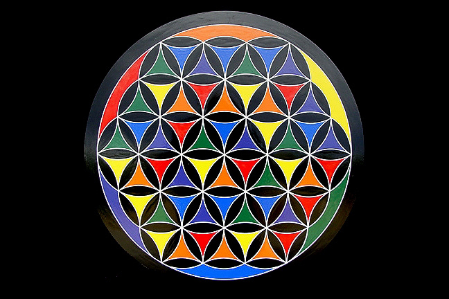
Flower of life design interpretation.
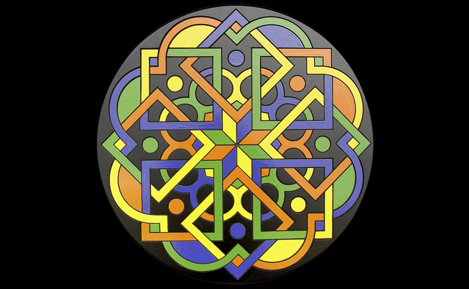
Celtic Knot design.
Design 2. Why Knot?
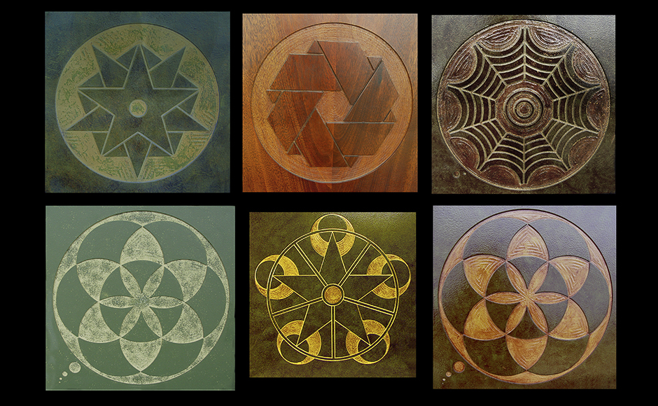
A selection of actual Crop-Circle designs carved in wood.
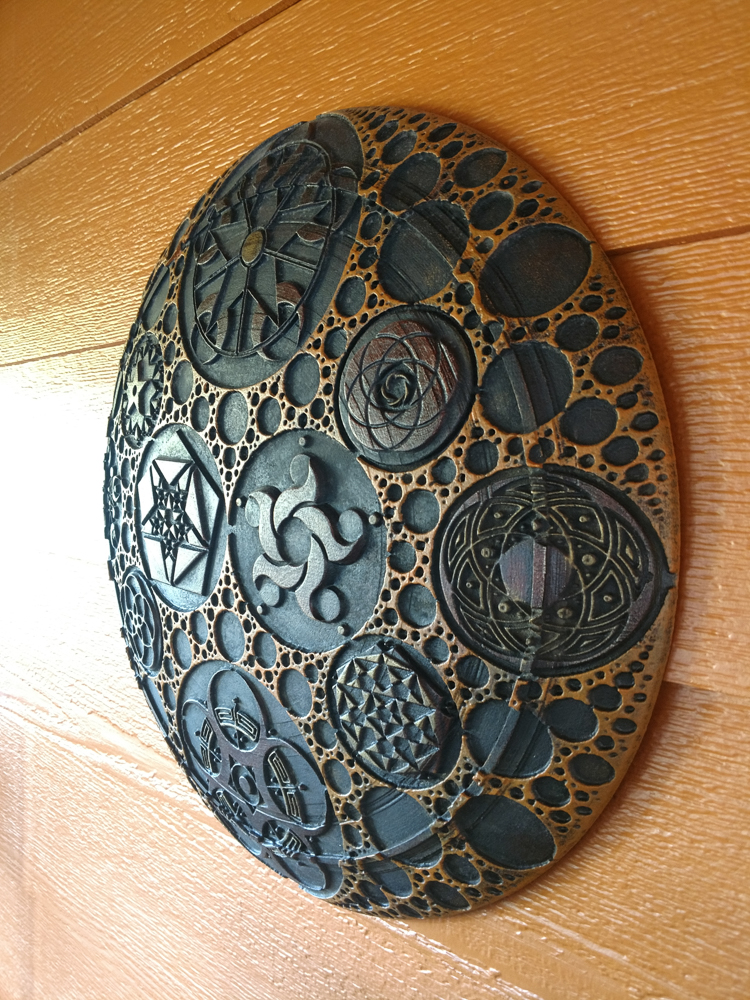
More Crop-Circles carved in sign foam inside an Apollonian gasket motif.
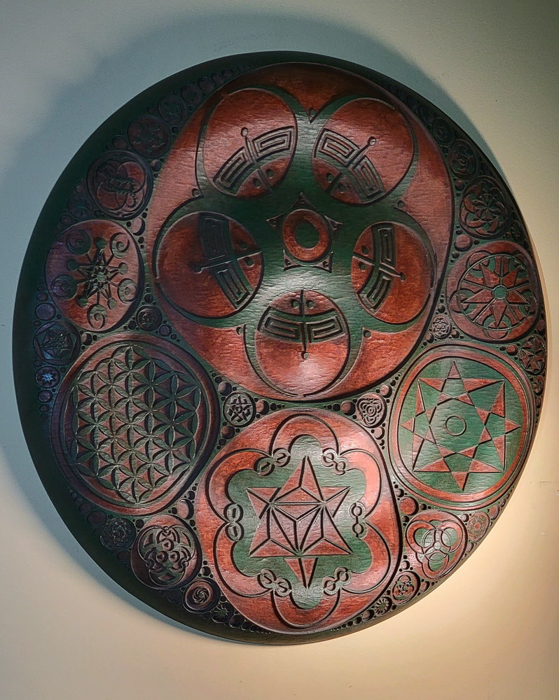
More Crop-Circles in a different Gasket motif.
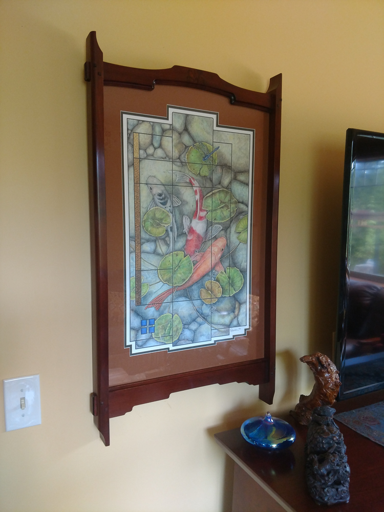
Custom designed picture frame for one of my wife's drawings.
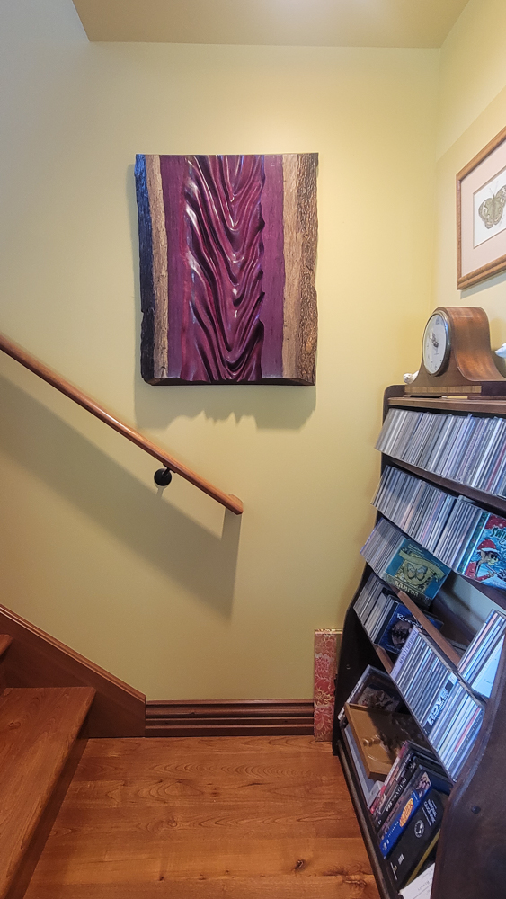
Rare piece of Purpleheart carved with a flowing fabric design. Live edge.
Picture frames and a carved Elm board with live edges.
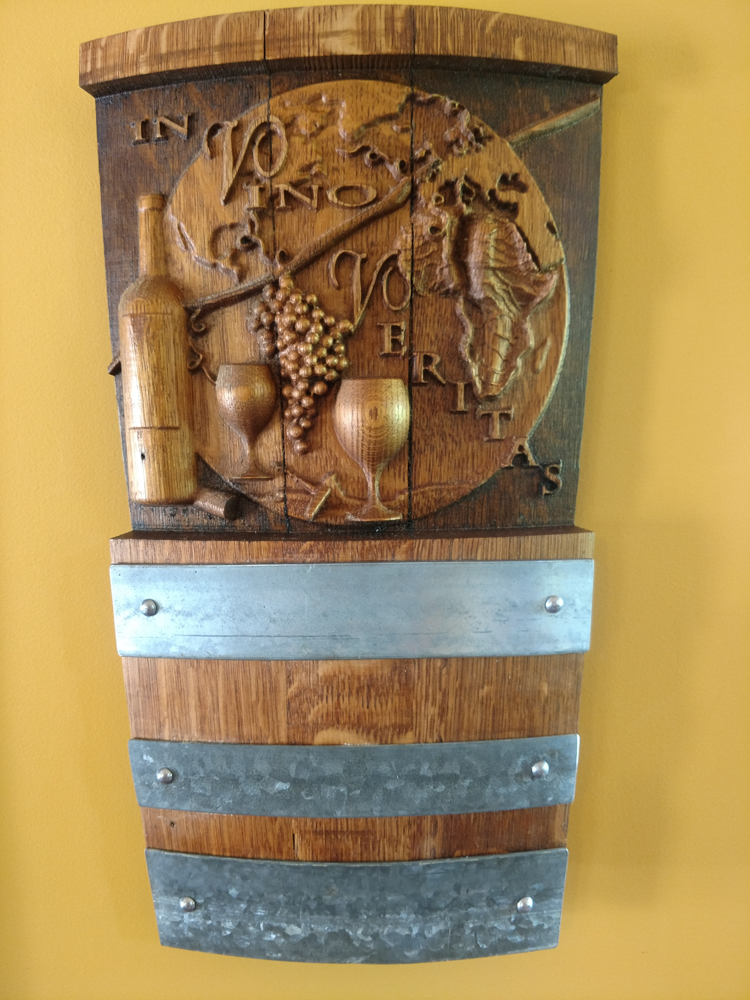
Wine Globe carved from an actual wine barrel showing the world represented by wine grapes and leaves.
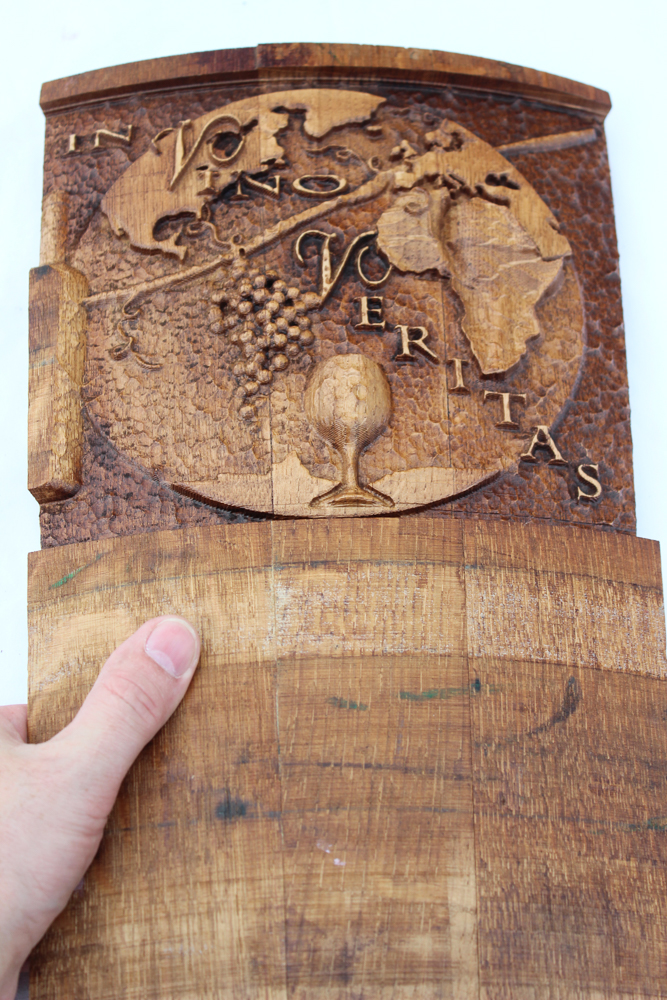
An early version of the Wine Globe.
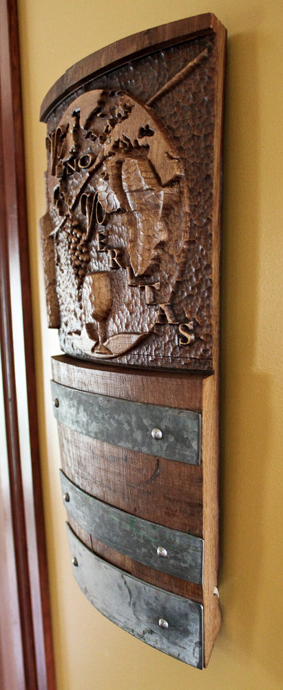
Another version on the wall.
Close up of a 7‑foot diameter sign for a yoga studio.
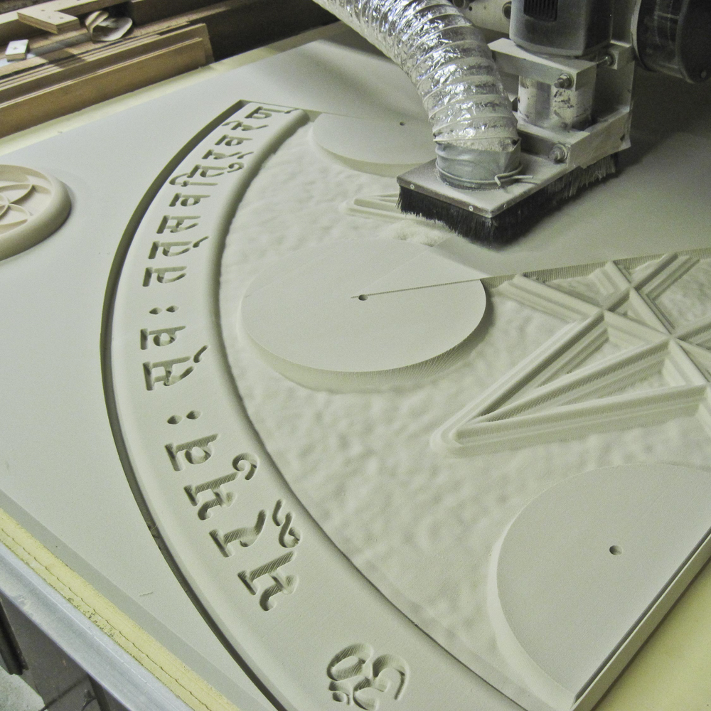
The sign being carved.
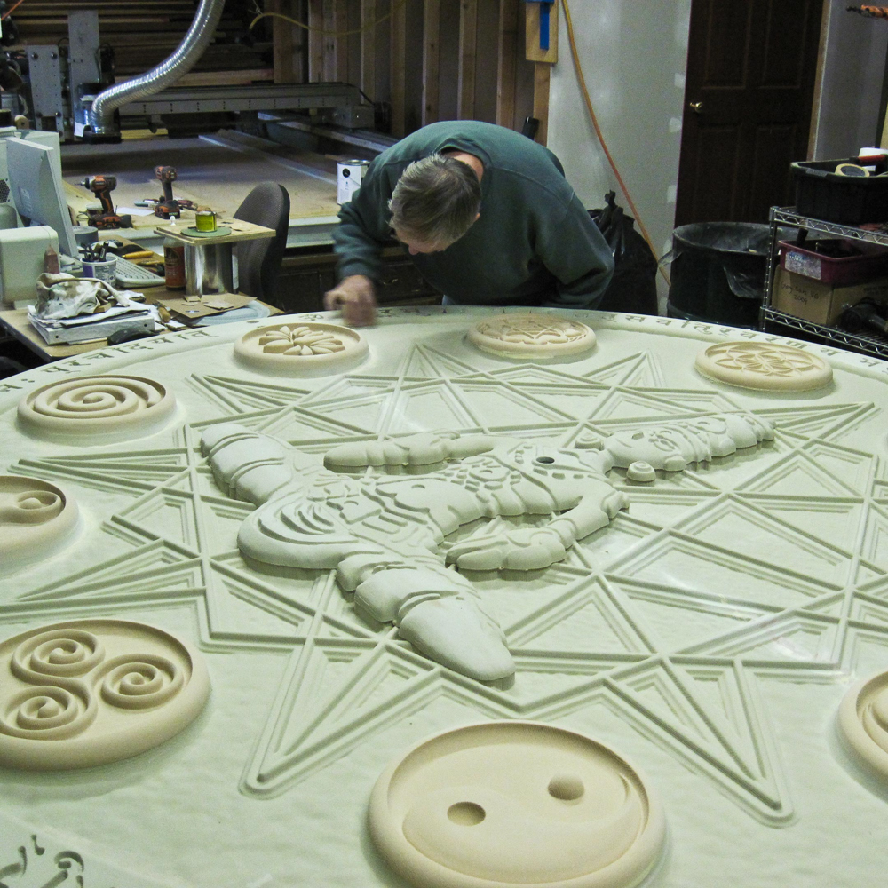
What a labor of love this was.
Job done.